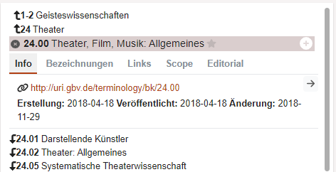
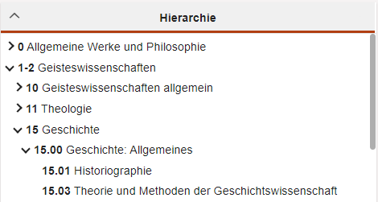

Cocoda User Manual
version 1.8.1 (2023-02-10)
Manual is beeing reviewed currently
Introduction
This manual gives a brief introduction to the main components of Cocoda. The web application for creating and managing mappings between knowledge organization systems (classifications, standards data, thesauri…) is maintained as part of the coli-conc project at the Head Office of the GBV Common Library Network (VZG). Cocoda use cases range from mapping own classifications to more established vocabularies, to creating mappings to improve retrieval in catalogs and discovery systems, to collecting mappings in Wikidata as a central hub for standards data.
Several tutorials, screencasts, and variously configured instances of Cocoda are linked at https://coli-conc.gbv.de/cocoda/, including:
- the current release version: https://coli-conc.gbv.de/cocoda/app/
- the current development version: https://coli-conc.gbv.de/cocoda/dev/
Depending on the configuration of the Cocoda instance, some of the features described here may not be available.
User Interface
Firefox or Chromium is recommended as the browser and a screen with at least Full HD resolution (1920×1080). The user interface can be customized via the settings; among other things, the language can be changed.
The menu bar contains (depending on the configuration):
- Logo and name of the respective Cocoda instance
- Left-right arrows to change the mapping direction
- Links to imprint, privacy policy, manual and feedback option
 Trash can to view and restore last deleted mappings
Trash can to view and restore last deleted mappings Quick selection of remembered concepts
Quick selection of remembered concepts User account and name. After successful login, the username is highlighted in bold and quick selection can be used to change identity for saving mappings and ratings
User account and name. After successful login, the username is highlighted in bold and quick selection can be used to change identity for saving mappings and ratings Settings with quick selection of the database into which mappings and ratings are saved
Settings with quick selection of the database into which mappings and ratings are saved
The rest of the screen is divided into three areas with several components:
- Components for selecting vocabularies and concepts Left and Right.
- Components for selecting, creating, and editing mappings in the middle.
When Cocoda is started, initially only the components for vocabulary selection are open while general notes are displayed in the center. The size of individual components can be changed with the dots or, the minimize icon hides a component. In addition, some components have icons in the lower right corner:
- Setting the behavior of the component
- Detailed view of the data and sources displayed in a component
User accounts
In principle, Cocoda does not manage its own user accounts. The settings are therefore also only stored in the browser. Existing accounts with external services can be used for login:
- ORCID
- Wikimedia (Wikipedia, Wikidata…)
- GitHub
- StackExchange
- LDAP (only VZG internal)
These external accounts are called Identities in Cocoda. The identity selected in each case and the corresponding username are displayed in the menu bar after successful login and can be changed there. Further details can be viewed in the settings under “Account”. Users can decide for themselves whether and with which identity Cocoda stores user contributions for public viewing:
- If the personal assignment of contributions is not desired, the default identity should be selected. In this case, an account identifier is used whose assignment to identities is only visible to the administrators of the mapping database at VZG. In addition, a pseudonym should be assigned as a name.
- If one of the other identities is selected, the user can be publicly identified by the identity URI.

If mappings should not be publicly viewable at all, mappings can also be saved locally in your own browser without login. However, this feature is disabled in some Cocoda instances for the sake of clarity.
Concept schemes and concepts
Cocoda provides unified access to a variety of concept schemes (or just schemes) like ontologies, (controlled) vocabularies, taxonomies, and terminologies from different data sources. A concept scheme is an organized collection of concepts with additional information about the concept scheme. A concept is an individual object such as a person, a place, or a topic. Most concepts have at least a unique preferred label, a unique notation, and a globally unique URI. Cocoda recommends all concept schemes to be registered in the Basic Register of Thesauri, Ontologies & Classifications (BARTOC) and to use its identifiers to uniquely refer to indivial concept schemes. For instance, the Dewey Decimal Classification (DDC) is a concept scheme of type universal library classification, published by OCLC and registered in BARTOC with URI http://bartoc.org/en/node/241.
The display of concept schemes and concepts on the left and right side respectively consists of components for:
- selection of source or target scheme
- view information about a selected scheme
- Search for concepts in the selected scheme
- view information about a selected concept
- hierarchical browsing in selected scheme (if available)
- view concept lists (if available).
Scheme selection
The selection of a scheme is possible via title search and via the vocabulary list. The filter icon  can be used to limit the list by source, language, vocabulary type, favorites and only vocabularies with concepts. If the filter icon is marked with a dot, a filter is active. With the plant
can be used to limit the list by source, language, vocabulary type, favorites and only vocabularies with concepts. If the filter icon is marked with a dot, a filter is active. With the plant  a vocabulary can be selected or deselected as a favorite. Favorites are always displayed first. After selecting a vocabulary, a search field appears and information about the vocabulary is displayed. With the cross behind the scheme name the scheme can be deselected. For quick access to the scheme selection there are keyboard shortcuts
a vocabulary can be selected or deselected as a favorite. Favorites are always displayed first. After selecting a vocabulary, a search field appears and information about the vocabulary is displayed. With the cross behind the scheme name the scheme can be deselected. For quick access to the scheme selection there are keyboard shortcuts Ctrl+Shift+f (left) and Ctrl+Shift+g (right).
Scheme details
This component displays scheme information like identifier, creation date, license, publisher, scheme types and data source. If the treeview is minimized, the top concepts are also displayed here. The link to existing mappings opens the mapping search.

Search for concepts
In the search field concepts can be searched for by notations or by label. It is possible to configure this component to fill in the label of the selected concept in the search field on the opposite site automatically. Some schemes offer the option to filter concepts by type: in such a case a special icon  is displayed in the search field. There are shortcuts to activate the search for concepts briefly:
is displayed in the search field. There are shortcuts to activate the search for concepts briefly: Ctrl+f (left scheme) und Ctrl+g (right scheme).
It is also possible to select concepts although there is no concept with the given notation in this scheme. This can be done by searching with a syntactically correct notation. These concepts are marked with a red dot (•).
Concept details
After selecting a concept, information about the selected concept is displayed instead of vocabulary details. Besides superclasses and subclasses (if available):
- Info: metadata like identifier and modification date.
- Designations: Preferred and alternative designations.
- Scope/Editorial: usage notes and descriptions
- Links: Links in other databases (Wikipedia, K0plus…).
The star  adds or removes the concept from the quick selection list. The plus sign is used to add the concept to the Mapping Editor. The arrow
adds or removes the concept from the quick selection list. The plus sign is used to add the concept to the Mapping Editor. The arrow  selects the next concept in the tree view or from the currently selected list. For quick switching there are keyboard shortcuts
selects the next concept in the tree view or from the currently selected list. For quick switching there are keyboard shortcuts Alt+n (left) and Alt+m (right) for this action.

Treeview
In addition to browsing via scheme details and concept details tree view  is provided for monohierarchical schemes.
is provided for monohierarchical schemes.

Listview
Instead of the tree view, a popup  can be used to select the list of quick selection concepts
can be used to select the list of quick selection concepts  and, depending on the configuration, additional concept lists
and, depending on the configuration, additional concept lists  . Additional lists are updated only by reloading them with the refresh icon
. Additional lists are updated only by reloading them with the refresh icon  .
.
Mappings
The main task of Cocoda is to create, edit, search and evaluate mappings. A mapping is a directed connection between a concept and one or more concepts from another vocabulary. To select, create and edit mappings, two components are provided in the center of the user interface:
- mapping editor for creating and editing mappings.
- Mapping browser consisting of areas for concordances, search and navigator for searching, browsing and rating mappings and searching for mapping suggestions.
Mappings can also be assigned ratings depending on the configuration. Mappings and ratings can be stored in different mapping databases.
Mapping Editor
The mapping editor is used for detailed editing of a mapping. For this purpose, concepts can be dragged and dropped into the mapping editor or taken over from the left or right side with the plus icon . There are also keyboard shortcuts (Ctrl+a or Ctrl+d) for taking over the respective selected concept. With the cross a concept can be removed again.
In the editor settings  you can specify that only 1-to-1 mappings are allowed; otherwise a concept can also be mapped to a combination of several target concepts (AND operation). For multiple alternative target concepts (OR-link), multiple mappings should be created instead. Furthermore, null mappings are possible if a concept has no equivalent in the target vocabulary.
you can specify that only 1-to-1 mappings are allowed; otherwise a concept can also be mapped to a combination of several target concepts (AND operation). For multiple alternative target concepts (OR-link), multiple mappings should be created instead. Furthermore, null mappings are possible if a concept has no equivalent in the target vocabulary.

In the middle of the editor, the type of mapping can be selected. The following mapping types are available for selection:
- = exact match: same meaning.
- ≈ close match: same general idea but not fully identical meaning
- > more general meaning (e.g., superior to inferior).
- < more specific meaning (e.g., part-whole relationship).
- ~ related, associative linkage.
- → general mapping relation with unknown meaning context.
On the bottom right, depending on the authorization, a concordance can be selected into which the mapping should be saved. At the bottom left, it is shown if and in which database a mapping has been saved or should be saved. At the bottom of the editor the following actions are available:
- ±0 Evaluate mapping
- swap source and target of mapping
 save mapping (keyboard shortcut
save mapping (keyboard shortcut Ctrl+s)- delete mapping
 duplicate mapping to create a new mapping with the same content
duplicate mapping to create a new mapping with the same content- empty mapping to create a new mapping (
Ctrl+Shift+c)
After saving, the editor will be emptied to avoid overwriting the saved mapping; this behavior can be changed in the editor settings  .
.
If mapping hints are configured for the selected source and target vocabulary combinations, they will be accessible via a help info  can be called.
can be called.
Concordances
The first pane of the Mapping Browser component lists concordances where mappings have been collected in a coordinated fashion.1 The concordances can be filtered by source and target vocabulary and by publisher. The link icon opens the mapping search with filter on the respective concordance. Depending on the permission, new concordances can be created with  and edited with
and edited with  . With the info icon
. With the info icon  you get all information about the concordance.
you get all information about the concordance.
Mapping Search
The mapping search provides a meta search for mappings in existing data sources. The following filters can be specified in the first line of the search form:
- source vocabulary
- source notation or URI
- target vocabulary
- target notation or URI
Vocabularies and concepts can also be dragged and dropped into the search fields.
The lock icon  or can be used to specify that the source or target vocabulary selected via sheme selection should always be used automatically. The filter icon
or can be used to specify that the source or target vocabulary selected via sheme selection should always be used automatically. The filter icon  offers further search options:
offers further search options:
- Author/Author
- Mapping type
- Bidirectional search (search source and target also interchanged)
- Cardinality
- Rating
- Concordance
- Mapping databases to be searched in
If the search returns no or too few results, it may be that too many filters are set. The Clear button resets all filters. The share icon contains the URL to the current search to bookmark or share it.
The mapping search results list is divided by data source and corresponds to the view in the Mapping Navigator. The individual sources can be shown or hidden by clicking on their name.
Mapping Navigator
In the Mapping Navigator, mappings and mapping suggestions from various data sources are displayed that match the concepts selected on the left or right. For which concepts and vocabularies mappings should be considered in the navigator can be defined in the settings. The individual data sources can be shown or hidden by clicking on their abbreviations. Data sources that can be written to are marked with a pen  . For each mapping or mapping suggestion are displayed:
. For each mapping or mapping suggestion are displayed:
- Source vocabulary and concept.
- mapping type
- Target vocabulary and concept
- Created by whom and when
As well as depending on the settings:
- ratings
 Edit mapping
Edit mapping- delete mapping
 detail information about the mapping or suggestion
detail information about the mapping or suggestion- copy suggestion to mapping editor
Ratings
Basically two types of ratings are possible, whereby it depends on the configuration who can give which ratings:
- Rating by approval
 or disagreement
or disagreement 
- Evaluation by confirmation
 (usually only for selected accounts).
(usually only for selected accounts).
Approvals and rejections are rated as +1 and -1 respectively, and their sum is displayed. For approvals one rating is enough for a checkmark  to be displayed instead of the sum. All ratings are user related. So it is visible who has given which rating and when. Own evaluations can be removed again.
to be displayed instead of the sum. All ratings are user related. So it is visible who has given which rating and when. Own evaluations can be removed again.
Registries
A registry is an individual source of data about concept schemes, concepts, mappings etc. An example is the public concordance registry with concordances and mappings collected in project coli-conc.
Registries can be configured via the registries field in the configuration. The technical access to data from a registry is implemented via providers.
Configured mapping registries can be enabled and disabled in the mapping browser to show or hide their mappings.
Settings
A click on the user name in the menu bar opens the settings. In addition, some components can be configured with the icon  . Since Cocoda does not manage user accounts, the settings are only stored locally in the browser. The settings are divided into different sections:
. Since Cocoda does not manage user accounts, the settings are only stored locally in the browser. The settings are divided into different sections:
- Account: Identity for storing mappings and ratings.
- Data Sources: Overview of all available data sources.
- Interface: settings for the user interface like the language
- Keyboard shortcuts: available keyboard shortcuts
- My data: Import and export mappings
Data sources
Cocoda, as a pure web application, accesses all information via web interfaces (APIs). The data and API calls are each accessible via the source code icon . The data sources configured per instance can be viewed in the settings.
Mapping databases
Mapping databases are used to store mappings and ratings. The database selected in each case is highlighted and can be selected via the settings or by clicking on the name of the database in the mapping browser. Most instances contain these databases:
- L Local: Mappings are stored in the browser.
- C Concordance register: public database of all mappings and assessments collected in the coli-conc project.
- W Wikidata mappings: read and write access to mappings in Wikidata.
Other data sources
Vocabularies and mapping suggestions can be included in a Cocoda instance via JSKOS API, via Skosmos API and via OpenRefine Reconciliation API. Adding additional data sources via the user interface is not possible yet.
Export and import
To export data from Cocoda, use the source icon . The JSKOS data can be downloaded in various formats such as CSV and JSON. Partial API calls are also available to retrieve the data.
Additional vocabularies, mappings and mapping suggestions can be included in the application by configuring a Cocoda instance accordingly. Please contact us if you have any questions about this (http://coli-conc.gbv.de/contact/).
Mass import of mappings via the web interface is so far only possible in the L Local database.
Further information
More information, tutorials, screencasts and more can be found via the project homepage https://coli-conc.gbv.de/. For questions and feedback about the software, it is best to use the GitHub IssueTracker.
The icons used in Cocoda are from fontawesome and licensed under CC BY 4.0.
See also http://coli-conc.gbv.de/concordances/ for an overview↩